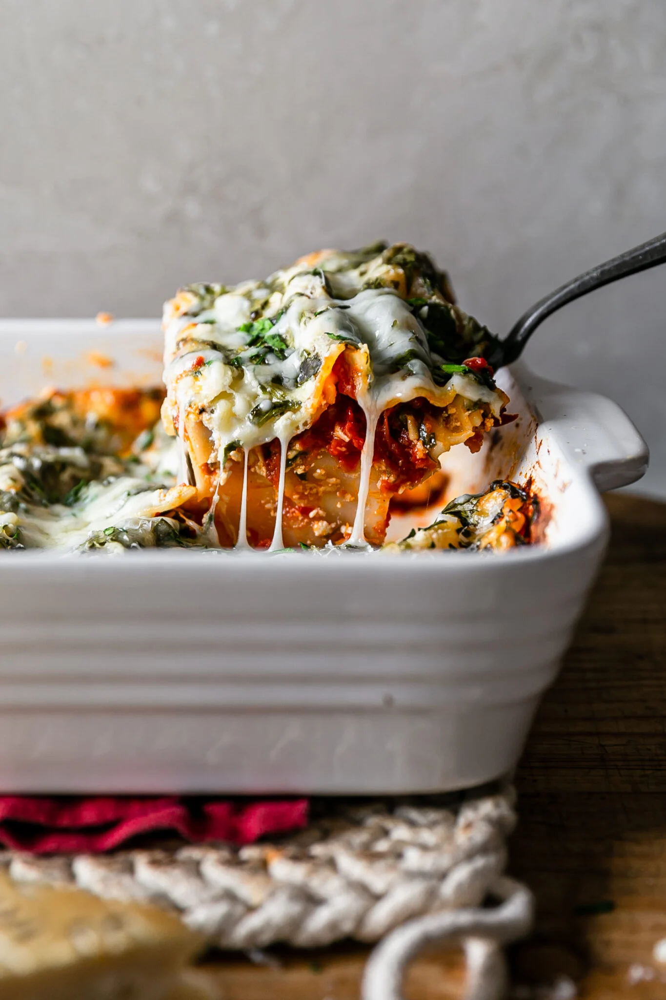

Back to Home
Vegetarian Spinach LASAGNA

Description
Looking for a hearty and satisfying vegetarian dish that will please everyone at the dinner table?
Try this delicious and easy Vegetarian Spinach Lasagna! Layers of tender lasagna noodles, creamy cottage
cheese, and savory marinara sauce are balanced with bright, fresh spinach and gooey, melty mozzarella
cheese, making for a mouthwatering meal that will quickly become a family favorite!
Ingredients
- cooking spray
- salt and ground black pepper to taste
- 1 bunch fresh spinach
- 9 lasagna noodles
- 1 (8 ounce) container ricotta cheese
- 1 cup shredded mozzarella cheese, divided
- 1 pinch ground nutmeg
- 1 pinch dried basil
- 1 cup pasta sauce
- ¼ cup grated Parmesan cheese
Steps
- Preheat the oven to 400 degrees F (200 degrees C). Spray a 1 1/2-quart casserole dish with cooking spray. Set aside.
- Bring a large pot of lightly salted water to a boil. Place spinach in the water and boil until wilted and tender, about 2 minutes. Remove spinach with a slotted spoon, pressing out excess water. Set aside.
- Cook lasagna in the same boiling water, stirring occasionally, until cooked through but firm to the bite, about 8 minutes. Drain.
- Mix spinach, ricotta cheese, 1/2 cup shredded mozzarella cheese, nutmeg, basil, salt, and black pepper in a bowl until well combined.
- Spread 1/4 cup pasta sauce on the bottom of the prepared casserole dish. Top with 3 lasagna noodles, 1/2 of the ricotta mixture, and 1/4 cup pasta sauce. Repeat layers of 3 more noodles, 1/2 cup ricotta mixture, and 1/4 cup pasta sauce. End with remaining 3 noodles and 1/4 cup pasta sauce. Sprinkle with remaining 1/2 cup shredded mozzarella cheese. Top with Parmesan cheese. Cover casserole with aluminum foil.
- Bake in the preheated oven for 25 minutes. Uncover casserole and continue baking until lasagna is bubbling and lightly browned, about 25 more minutes. Let lasagna stand 5 minutes before serving.